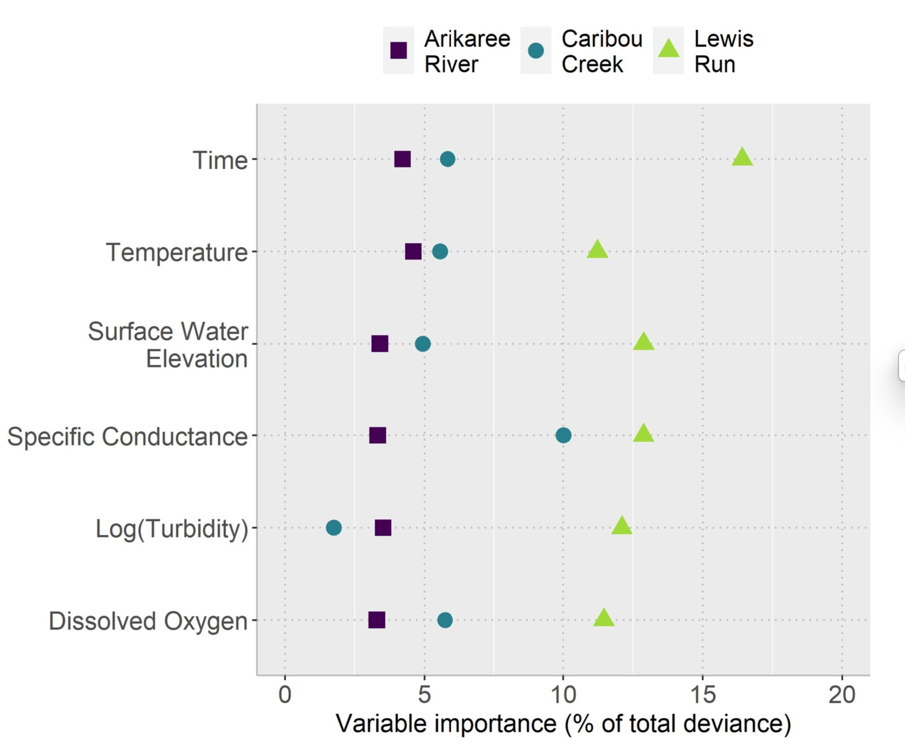

| Characteristic | Arikaree River | Caribou Creek | Lewis Run |
|---|---|---|---|
| Climate Zone | Semi-arid | Subarctic | Temperate |
| Land Use | Grasslands, agriculture | Subarctic taiga | Fields, pastures, woodlands |
| Flow Persistence | Intermittent | Perennial by ice | Perennial |
The Data: Listening to the Rivers
This analysis uses high-frequency data from the National Ecological Observatory Network (NEON), a program run by the National Science Foundation in the USA. The data was collected every 15 minutes from three vastly different river sites to see if a single modeling approach could work everywhere.
As you can see in Table 1, the chosen locations represent a wide range of climates and land uses, from the semi-arid grasslands of Colorado to the subarctic taiga of Alaska.
Key Variables in the Dataset
The model didn’t predict nitrate levels from a single measurement, but by understanding the relationships between several key variables measured by standard sensors. These included physical properties like Water Temperature and Surface Water Elevation (the stream’s height), along with chemical indicators like Dissolved Oxygen. The model also used Specific Conductance, which measures the water’s ability to conduct electricity (a proxy for dissolved salts and minerals), and Turbidity, which is simply a measure of water cloudiness.
The authors describe several steps they took to clean and prepare the data before analysis:
Data Synchronization: Because nitrate was measured every 15 minutes while other variables were measured more frequently, any measurements that did not align with a nitrate measurement time point were discarded.
Removal of Anomalies: Data that had been flagged as anomalous during the standardized NEON quality control process (e.g., due to sensor calibration issues) were removed before the analysis began.
Variable Selection (Multicollinearity): The researchers checked for multicollinearity among potential explanatory variables using the variance inflation factor (VIF). Variables that were strongly correlated with others (VIF < 6), such as conductivity and pH, were removed to ensure a robust model. Chlorophyll-a data were also excluded due to a high number of anomalies.
Data Transformation: After examining the data distributions, the authors found that turbidity was strongly right-skewed and applied a log transformation to this variable before using it in the models
Code and Software Used
The paper specifies the software, packages, and location of the code used for the analysis:
Software and Packages: All statistical analyses were performed using R statistical software. The specific packages used were
car,gam,mgcv, andforecast.Code Availability: The full R script used to perform the analyses is available in a public GitHub repository: https://github.com/Claire-K/nitrate_links.
The Analysis: Unlocking a 99% Accurate Prediction
The core finding of the study is astounding: a statistical model was able to explain up to 99% of the variation in nitrate levels using only the standard sensor data mentioned above. This incredible accuracy was achieved across all three distinct environmental sites.
While the same set of variables was significant at each location, their relative importance changed, highlighting the need for site-specific calibration. For example, Figure 1 shows that Specific Conductance was a powerful predictor at the temperate Lewis Run site, while Temperature was more dominant at the semi-arid Arikaree River.

This tells us that there isn’t a “one-size-fits-all” equation, but there is a “one-size-fits-all” recipe. The same ingredients (variables) work everywhere; you just need to adjust their amounts based on the local environment.
Conclusion: A New Strategy for Environmental Monitoring
The research by Kermorvant (Kermorvant et al. 2023) provides a powerful and transferable framework for monitoring water quality. It proves we can leverage existing, inexpensive sensor networks to model nitrate dynamics with a high degree of accuracy.
This has huge implications. Environmental agencies and water management authorities could potentially reduce their reliance on costly, specialised nitrate sensors, deploying them more strategically while using this modeling approach to fill in the gaps. It opens the door to a future where we can monitor more of our waterways, more often, and more affordably, giving us the crucial insights needed to protect these vital ecosystems.
References
Kermorvant, C, B Liquet, G Litt, K Mengersen, EE Peterson, RJ Hyndman, et al. 2023. “Understanding Links Between Water-Quality Variables and Nitrate Concentration in Freshwater Streams Using High Frequency Sensor Data.” PLOS ONE 18 (6): e0287640.